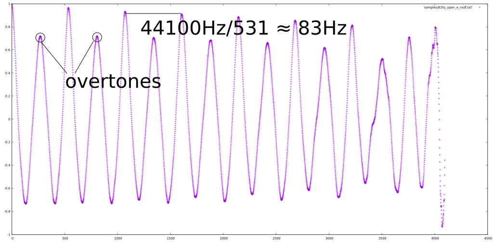
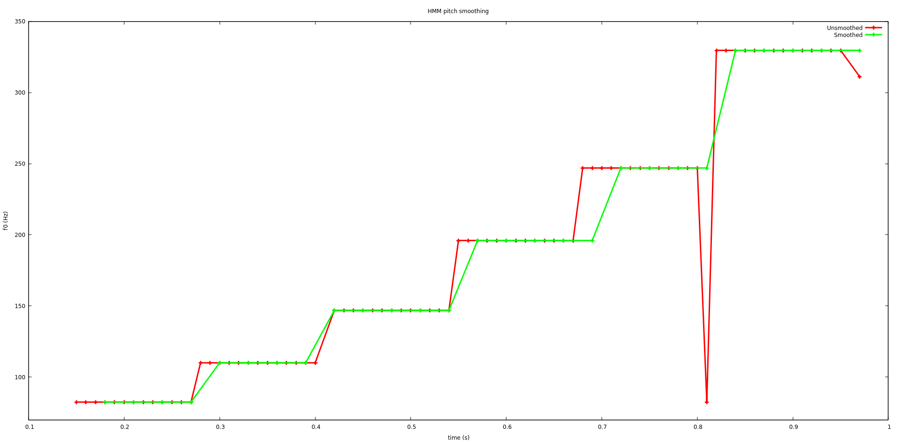

This is the accompanying website to my collection of C++ pitch detection algorithms.
A pitch detection algorithm (PDA) is an algorithm designed to estimate the pitch or fundamental frequency of a quasiperiodic or oscillating signal, usually a digital recording of speech or a musical note or tone. This can be done in the time domain, the frequency domain, or both. - [0]
McLeod pitch method and YIN share some things in common. Both create a (similar-to) autocorrelation buffer, and perform parabolic interpolation to pick peaks and estimate periodicity.
Read the McLeod pitch method paper, and explore autocorrelation vs. MPM visualizations and source code here -
Read the YIN paper, and explore autocorrelation vs. YIN visualizations and source code here -

Try to write your own autocorrelation-based pitch detection algorithm, e.g. with scipy. Use the wav_analyzer utility to see what it might look like in C++ to open an audio file and send it chunk by chunk to a pitch detection algorithm. If you prefer Python, here's a tiny Python snippet which uses Pydub to extract audio from a file.
Read the Probabilistic YIN paper, and the similar Probabilistic McLeod pitch method doc.
Explore my HMM pitch smoothing code which demonstrates HMM-based pitch smoothing techniques -
